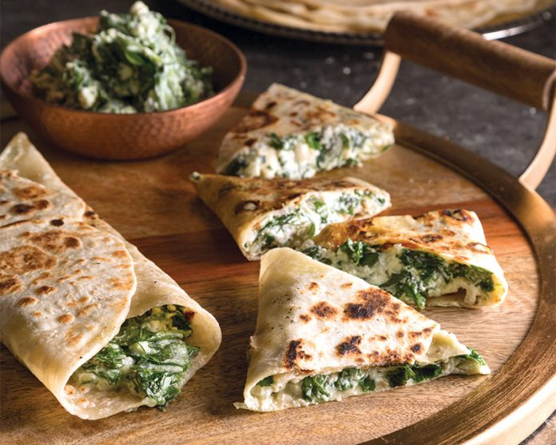

Gözleme is a Turkish flatbread consisting of flour, water, yeast, olive oil, and yogurt, which prevents the flatbread from going too brittle. The dough is filled with Ingredients such as meat, vegetables, eggs, various cheeses, or mushrooms, and is then baked on a sac griddle.
Meal prep time : 45 minutes
Servings : 2